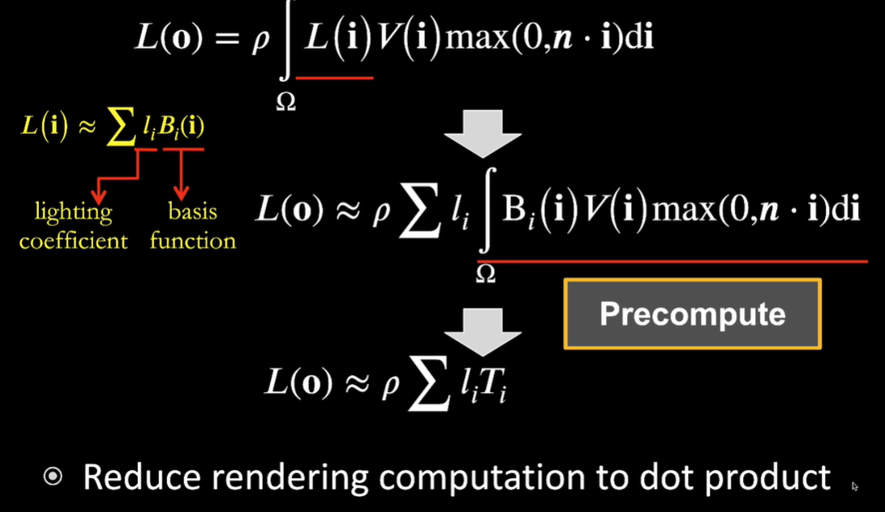

[图形]实时环境光
Image Based Lighting (IBL)
考虑环境光照，可以使用一张图来表示来自无限远处，所有方向的光
储存这张图可以用Spherical map或者cube map
如何使用IBL对着色点着色？
复习一下渲染方程（没有可见性的版本）
光线追踪已经学过了，解任何一个积分都可以用蒙特卡洛法。但是蒙特卡洛积分需要大量采样，只要涉及到采样结果就会非常慢
有没有什么不采样就能计算渲染方程的办法？

观察渲染方程
- 如果BRDF是Glossy的，光线反射后在球面覆盖的范围比较小
- 如果BRDF是Diffuse的，光线反射后会覆盖一个半球区域，但是很平滑，它的变化量是常数
变化量小，渲染方程又是乘积的积分
我们还记得之前实时阴影里我们把可见性从积分里拆出来了，而且当积分范围小，并且函数变化量不大，积分会更加准确
所以，我们把light从积分里拆出来
观察公式，可以发现，我们只要把区域的light积分起来再normalize就行了
也就是说，要做的事情其实是，把IBL模糊处理

对环境光照进行pre filtering，也就是使用不同size的filter对环境光照滤波生成一系列map，其他size的map可以根据这些结果进行三线性插值
为什么要pre filtering？

想要准确获取准确的light信息，可以根据BRDF的参数采样最后加权平均，这些操作等价于在镜面反射的方向上去查预先filtering的环境光，只要一次查询
现在，公式前半部分不需要采样了，那后面一半怎么办？也可以和前一半一样预计算出来
复习一下GAMES101讲过的一个BRDF，微表面模型

微表面模型有两个重要参数：
- 菲涅尔项（Fresnel term）决定了垂直看向物体表面有多少能量被反射
- 微表面法线分布（distribution of normals）
Schlick近似的菲涅尔项：

Beckmann近似的法线分布：

把这些近似带到公式中，会发现，预计算BRDF变成了三维的（R0、incident angle、roughness）
但是人们还想让它再降一维度
人们发现带入Schlick后，积分还可以近似成（太tm复杂就不写latex了）：

基础反射率R0被拆出来了，积分其实变简单了，预计算降维成了二维

预计算后的结果存成二维数组，就是张二维纹理

和路径追踪的结果对比
效果挺惊人的
这个方法叫做Split Sum
解决了shading point的环境光问题，再看渲染方程，发现还有个阴影问题没解决。环境光产生的阴影如何做？
做 不 到
非常非常 难 的，做 不 到
为什么？
- 环境光是四面八方来的，所以计算环境光产生的阴影其实是解决many-light问题（多光源）
主流的阴影生成需要shadow map，但是对任何一束光都去生成一遍，代价非常大 - 另一个角度，渲染是在解渲染方程，生成阴影最简单的办法是采样，采样四面八方各个方向上的visibility（可见性），但是非常难得知各个方向上的遮挡情况
- 还有一个角度，之前拆分渲染方程条件是函数积分区域小，频率低。但是可见性的频率未知，BRDF可能是高频的（glossy材质的），渲染方程积分域是一个半球，积分域大，很难将可见性项从渲染方程中拆出来
工业界解决环境光阴影问题，是用经验去近似，开发出了Ambient Occlusion (AO)，但也只是近似，并不准确
学术界也有相关研究，例如Imperfect shadow map、Light cuts、RTRT（Realtime Ray Tracing）以及PRT（Precomputed radiance transfer）
Precomputed Radiance Transfer (PRT)
PRT可以解决环境光带来的阴影问题（但是，古尔丹，代价是什么呢
Fourier Transform

任何一个函数都可以展开成常数和若干个基函数的线性组合
我们认为，卷积等于滤波等于 两个函数乘起来再积分
就是频域上两个函数相乘
而且频域上只要有一个函数是低频的，乘出来结果就是低频的
低频函数是平滑的
Spherical Harmonics
它是一系列的二维基函数（类似傅里叶变换里不同频率的sin和cos），定义在球面上（在球面上两个角度就可以确定一个方向）

（示意图里的颜色不是频率变化，只是表示值的大小）
球谐函数也有很多阶，表示阶数，每一阶描述的频率都是一样的，第阶有个基函数，前阶一共有个基函数，是基函数序号，从到
每一个基函数对应一个legendre多项式（？？？）
球谐函数作为一组基函数，利用它的线性组合就可以表示原函数
那么如何确定基函数前的系数？
定义任意一个球谐函数等于
投影：就是基函数前的系数
重建：直接用乘以再加起来就恢复出了原函数，而且恢复出的函数也是前l阶球谐能表示出的函数，相当于一个滤波器
好，现在不管它数学上是个什么鬼玩意，能用就完事了
考虑环境光，是来自四面八方的值，是一个球面上的函数，那就可以用球谐函数去投影，再用前几阶球谐函数去重建，就可以恢复出低频的环境光信号
Ravi教授等人在01年左右做过一些实验发现，diffuse BRDF类似于一个低通滤波器，使用一些低频信息就可以恢复出原始内容。之前也提到过，积分之后的频率取决于积分前最低的频率，当diffuse BRDF使用低频信息即可恢复内容时，也就意味着无论光照项是多么复杂，我们希望得到的是其与BRDF之积的积分，所以可以使用比较低频的基函数去描述。

简单来说就是不管环境光多复杂，但是拿它去照亮diffuse物体是看不出什么高频信息

下面的实验结果意味着，使用前3阶的球谐基函数就可以基本重建出正确率99%的结果
而且，只要是diffuse，就可以用前三阶SH，误差会小于3%
PRT
现在再来考虑如何将阴影也带入计算

BRDF本来是四维的，但前面解释过可以压成二维，那这三项都可以用球谐函数来解
最简单就是直接乘起来再积分（考虑立体角)

假设场景不会变，光源会变化
把lighting拆出来，lighting可以表示为系数乘以基函数后叠加起来
由于场景不变，后面的可见性相当于每个shading point本身的性质，也可以用基函数投影

球谐函数有很多不错的性质
- 正交性（基函数投影到自己结果是1，否则是0）
- 投影简单
- 旋转不变性
- 还原简单
- 低通滤波
像旋转光照很简单，球谐基函数跟着一起转就完事了
怎么转基函数？可以由同阶基函数线性组合得到
目前讨论的都是diffuse brdf，glossy brdf如何使用SH计算？
（这一大节的东西，有关数学的真折磨人）